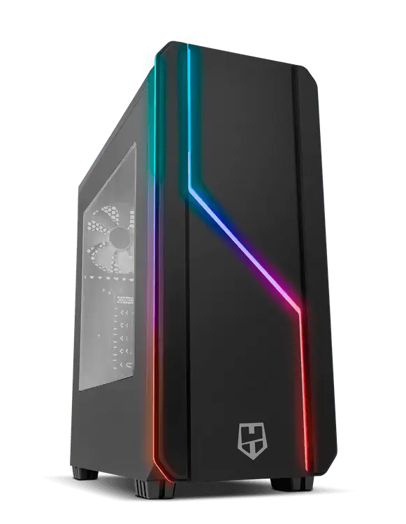

2015PC 1 · SUE · ETAPA ANTERIOR
La plataforma original
- CPUIntel Core i7-6700K
- PlacaGigabyte GA-Z170-HD3P
- RAM16 GB DDR4-2133
- GPURTX 2070 SUPER, incorporada después
- DiscosSanDisk 480 GB + Toshiba 2 TB
- CajaNOX Hummer MC Pro